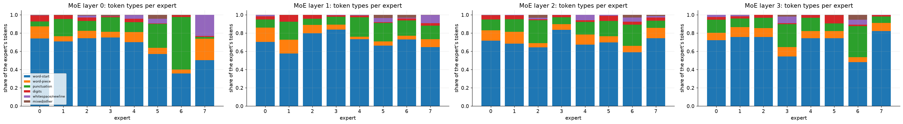
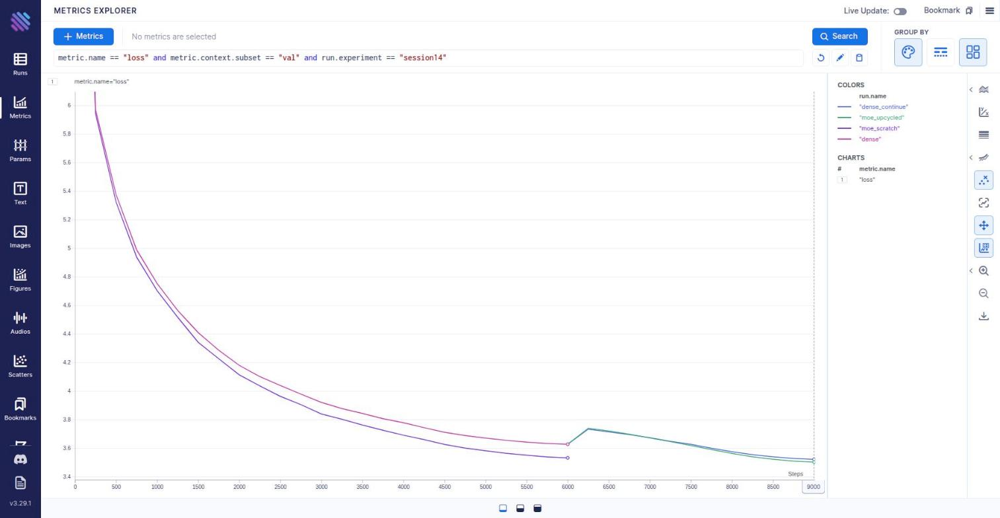
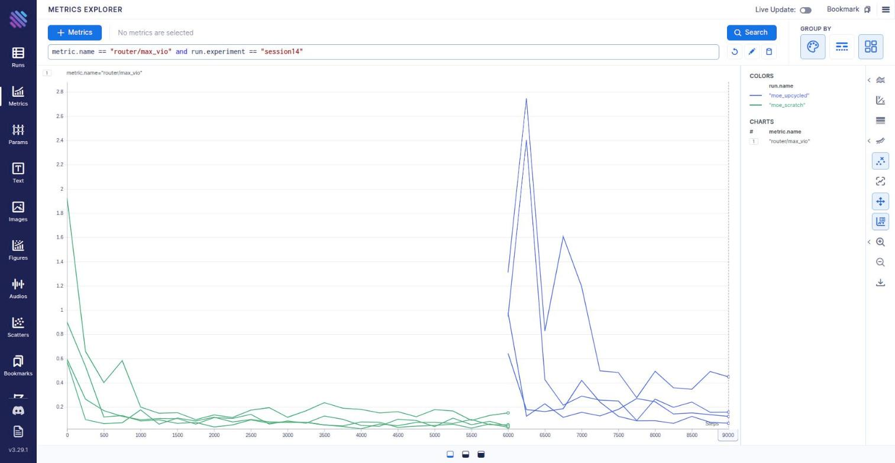
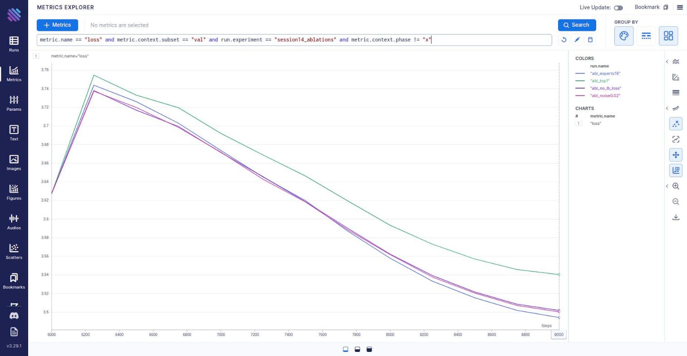
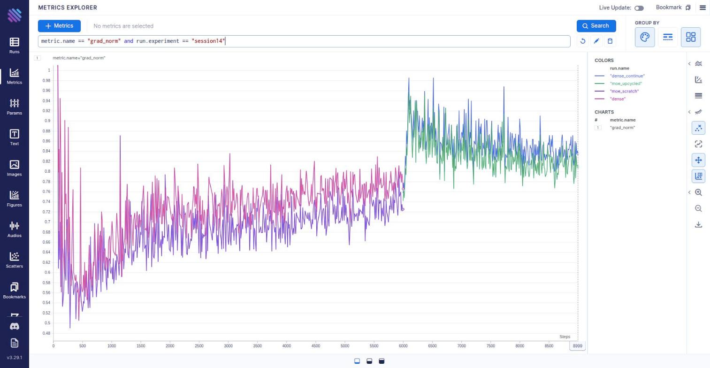
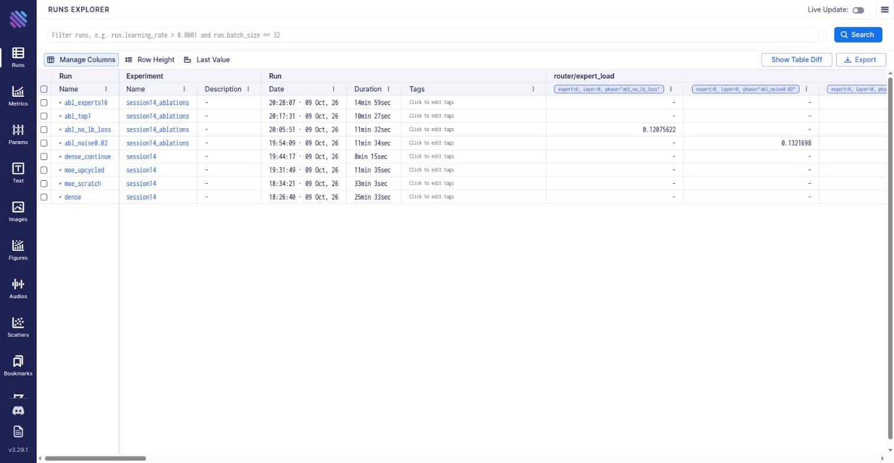

Dense → Mixture-of-Experts
Train it, convert it, keep training
A 51.2M-parameter nanoGPT is trained on 98M WikiText-103 tokens, then every second MLP is turned into
8 experts (top-2) by sparse upcycling and training continues. The assignment's bar is that the converted model
keeps training and keeps reducing loss. We also trained an MoE from scratch with the identical budget, a dense-continue control on the
same batches, and four ablations. Every number on this page comes from the run's results/*.json, and every run is tracked in Aim.
Every run, one table
Validation numbers use fixed evaluation batches (50 × 32 × 512 tokens drawn from the 249,750-token WikiText-103 validation split), identical for every run. Green marks the best value in each column within its phase (pre-training: first two rows; continuation: the rest). “Start” is the validation loss at the first step of that run.
Peak GPU memory is omitted: the trainer queried the wrong CUDA device (cuda:1 run, default-device query), so the recorded value is 0.0 and was not re-measured. Throughput is the median tokens/s; the dense pre-training run was disturbed (median 60k vs mean 83k), so compare speeds only between the two continuation runs.
The MoE layer: store many MLPs, run only a few
A transformer block's MLP holds two thirds of its parameters and every token passes through all of them. A Mixture-of-Experts layer stores E MLP-shaped “experts” and a small router that picks the best k for each token. Parameters grow ×E in those layers; compute grows only ×k.
Shapes are the ones used in the run: d = 512, MLP inner width 2048, 8 attention heads, 8 blocks. Gate values are illustrative.
S = TopK(p + b, k)
ge = pe / Σj∈S pj
y = Σe∈S ge · fe(x)
The bias b only steers which experts are chosen; the weights g come from the unbiased scores and are renormalised over the chosen experts. No token is ever dropped (no capacity limit).
⇒ y = Σ ge·f(x) = f(x)·Σ ge = f(x)
If every expert is a copy of the dense MLP, the mixture equals the dense MLP whatever the router says. A side effect: with k = 1 the gate is always exactly 1, so the router gets no gradient from the language loss (see the top-1 ablation).
be += γ · sign(1/E − loade)
γ = 1e-3 · aux loss 1e-4 · z-loss 1e-3
A router left alone is self-reinforcing: favoured experts learn faster and get favoured more, until some are dead. The bias nudges choices toward idle experts without adding a gradient that fights the language loss. Imbalance is reported as MaxVio = (max load − mean) / mean; 0 is perfectly even.
What the MoE adds: 2.15× the parameters, 1.16× the active ones
The base model is the session-11 nanoGPT (pre-LN, learned positions, tied head, GELU MLP) at 8 layers × 8 heads × width 512 with a 50,257-token GPT-2 BPE vocabulary. Half of the dense model is the (tied) embedding.
param_report)Active parameters = everything except the experts a token does not visit (top-2 of 8 ⇒ 2/8 of expert weights). FLOPs per token ≈ 6 × active matmul parameters + attention-score terms: 330.9 MFLOPs dense vs 381.4 MFLOPs MoE (1.15×).
Model, data, protocol
Same data stream, seed and evaluation tokens for every run. Continuation runs reset the optimiser (the MoE has new parameters, and the dense control is treated identically).
Pre-training: 300-step warm-up to 6e-4, cosine to 6e-5. Continuation: the LR is re-warmed from 6e-5 to 3e-4 over 100 steps, then cosine to 3e-5. That jump is the root of the bump discussed in section 7.
Four runs, one fork
The assignment: train a Linear model and convert it into an MoE; it must continue to train and reduce loss. The design makes that claim measurable, and adds the controls needed to interpret it.
Dense baseline: perplexity 37.6 after 98M tokens
6,000 steps of 32 × 512 tokens (0.83 epochs of WikiText-103). Validation loss fell at every one of the 25 evaluations, from 10.92 (ln 50,257 = 10.82) to 3.627.
- No overfitting: validation loss sits below training loss throughout (3.627 vs 3.647), as each token is seen at most once.
- The schedule ends the run, not capacity: the last 250 steps gain only 0.005 nats because the LR has decayed to 6e-5 — and section 7 shows another ≈ 0.1 nats is available once the LR is re-warmed.
- Sample text is grammatical and encyclopedic but repetitive (“the county … county”), as expected of a 51M model.
- Sanity check caveat: the single-batch overfit check printed
False— its 40-step / 50 % pass mark was too strict (loss 10.91 → 6.79, −38 %), not a training failure.
MoE from scratch: ahead from the first evaluation, gap widening to −0.096
Same seed, same batches, same schedule — only the architecture changes. 110.0M stored / 59.6M active parameters versus 51.2M.
Convert the trained dense model, then keep training
At step 6,000 the dense checkpoint is forked: one branch is converted to an 8-expert MoE, the other keeps training as a control. Both see identical batches and the same re-warmed learning-rate schedule.
Balanced from scratch; a rough start after conversion
Per-expert load is measured on the validation batches at each evaluation. A fair share is 1/8 = 0.125 of routed tokens per expert.
- From scratch: flat within a few hundred steps — shares 0.10–0.14, entropy ≈ 1.000, final MaxVio 0.03 / 0.04 / 0.05 / 0.15, 0 dead experts at the end.
- After conversion: the untrained router is wildly uneven (layer-0 shares 0.02 → 0.29). MaxVio peaks at 1.36 at step 6,250, and dead experts appear briefly (0 → 1 → 2 → 1 → 0): identical clones are hard for a router to tell apart. All are revived by step 7,000.
- It never gets as even as from scratch: final MaxVio 0.45 / 0.16 / 0.12 / 0.07 (layer 0 stays the roughest) — yet it trains to a better loss, so near-perfect balance is not required for a good result here.
The clones diverged — but specialisation is weak
After 3,000 steps the experts are no longer copies of each other. What they specialise in is mostly token type and syntax, not subject matter.
Cosine similarity of experts' flattened (w1, w2) within a layer: 1.0 at conversion. Drift = ‖Wexpert − Wdense‖ / ‖Wdense‖.
Lift = P(token | expert) / P(token), top-1 routing, 655k validation tokens. Rare-token lifts are noisy at this sample size.

Four variations of the upcycled run
Each is a full 3,000-step continuation from the same checkpoint on the same batches. Single seed each: differences of ≈ 0.002 are below what one seed can resolve.
top-1 routing only variant worse than control
With one expert per token the renormalised gate is always exactly 1, so the router receives no gradient from the language loss; only the bias and the 1e-4 auxiliary loss steer it. Dead experts climb to 5 and MaxVio reaches 4.1 in the last layer. The second expert is what makes the router trainable.
16 experts best loss, highest cost
0.008 nats below the 8-expert run (−0.027 vs the control) with the same 59.6M active parameters — but 177M stored and ≈ 0.76× the throughput. It starts rough (5 dead experts, MaxVio 2.3) and recovers by step 6,750.
no auxiliary loss ≈ no change
Setting the 1e-4 auxiliary loss to 0 (bias balancing still on) ends at 3.5017 vs 3.5019: the loss-free bias is carrying the balancing.
expert noise 0.02 ≈ no change
Noisy copies end at 3.5002 vs 3.5019 — inside single-seed noise. Symmetry breaking was not the bottleneck.
Not run: the exploration window, sigmoid router scores and drop-upcycling are implemented in src/moe and smoke-tested, but are not part of these results.
Better per token, not (yet) per second
The MoE wins at equal tokens. At equal time the dense model is ahead on this implementation, which runs the experts in a Python loop rather than a grouped-GEMM kernel.
MoE (2,507 steps) = interpolated crossing step × measured seconds/step.
- Per token: the MoE reaches the control's final loss in 16% fewer steps; from scratch it reaches dense's final loss in ≈ 25% fewer.
- Per second: the continuation took 11.5 min (MoE) vs 8.2 min (dense); even the 2,507 steps it needs cost ≈ 9.6 min. Median throughput is ≈ 0.71× the dense model's.
- Memory: 2.15× the stored parameters (110M vs 51M) and, with optimiser state, ≈ 2.15× the training state. Peak GPU memory was not captured (device-query bug), so no measured number is claimed.
- Where the speed would come from: grouped expert GEMMs and expert parallelism — not attempted here.
Everything is in Aim
Per-step loss, LR, grad-norm and tokens/s; train/val loss and perplexity at every evaluation; and for MoE runs per-layer expert load, load entropy, MaxVio, dead-expert count and the balance losses. Phase-2 runs continue the global step axis of the dense run, so curves line up. Snapshots from the live Aim UI:

metric.name == "loss" and metric.context.subset == "val", coloured by run. The fork at step 6,000 is clear.
router/max_vio), one line per MoE layer. From scratch: quickly below 0.2. Upcycled: the spike after step 6,000 (up to 2.7 in one layer), then settling.
session14_ablations): top-1 sits clearly above the others; 16 experts ends lowest.

session14: dense, moe_scratch, moe_upcycled, dense_continue; session14_ablations: four variants). Browse locally with uv run aim up from moe_experiments/.What we can and cannot claim
Run it yourself
A uv-managed project with notebooks, a shared src/moe package and a smoke test that exercises every code path on a tiny model in about a minute.
uv sync
uv run python scripts/smoke_test.py --notebooks
MOE_DEVICE=cuda:1 uv run python scripts/run_all.py
uv run aim up
uv run python scripts/make_figures.py
uv run python scripts/export_webapp_data.py